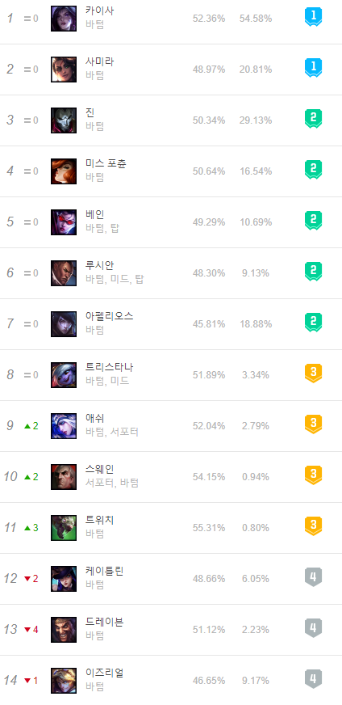
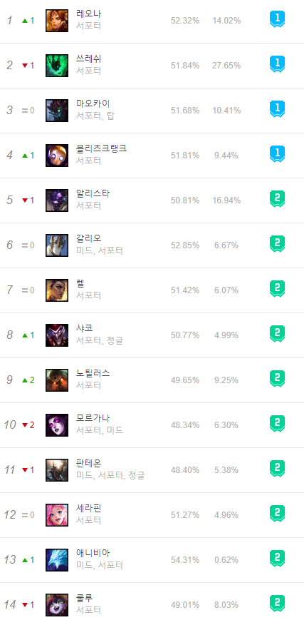

게임에 들어가보면 탑, 미드, 바텀 그리고 정글 라인이 있다.
이곳에서는 바텀에 관해서만 집중적으로 탐구해 볼 것이다.
바텀은 맵 최하단에 위치해있으나 탑과 다르게 원거리딜러(이하 원딜)과 서포터(이하 서폿)의 2명의 플레이어가 같이 내려가는 라인이기 때문에 영향력이 미미하던 탑과 달리 정글과 미드 심지어 탑까지 바텀을 주시한다.
사실 어느 라인에 오는 챔피언이 딱딱 정해져있는 것은 아니라지만 유독 바텀에서만 자주 보이는 챔피언이 있다.
 위 사진본은 2021-01-24기준으로 캡처한 바텀 1티어의 사진이다. 원딜은 이름을 보면 알 수 있듯이 원거리가 상위티어의 주를 이룬다. 여기서 주목해야 할 것은 서폿의 상위티어이다. 서폿의 상위티어는 cc기가 있는 챔피언들이 주를 이루는 것을 목격할 수 있다.